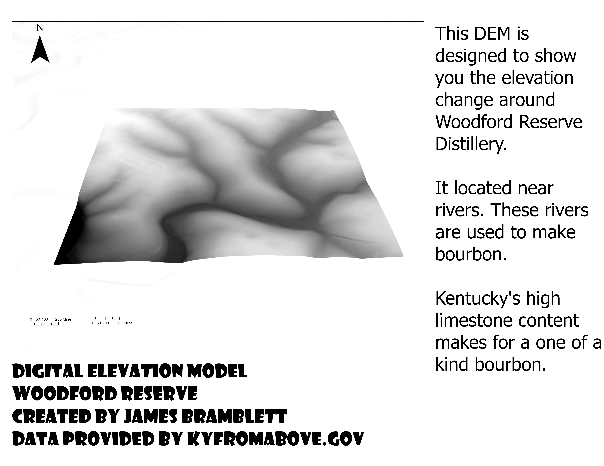

Woodford Reserve Timeless Bourbon
Take a tour of woodford reserve and see where fine bourbon is made!
Woodford reserve is located in Woodford County, Kentucky. The reserve began operations in 1812 and has over nine diffrent whiskey lines.
The secret to Woodford Reserves's fine bourbon comes from its copper pot stills and 100-year-old cypress wood fermenters.
The goal of this project is to give a tour of Woodford Reserve.
Im also trying to convince you that you should go try a bottle of Woodford Reserve! ( Must Be Over 21 :) )

Woodford Reserves Current Lineup
This is a DEM of Woodford Reserve. Its reletively Flat, but as you can tell its located near water!